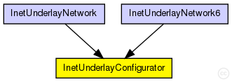
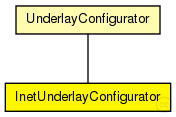

This documentation is released under the Creative Commons license
This documentation is released under the Creative Commons licenseConfigurator of the IPv4Underlay
Sets up an IPv4Network (backbone and access routers), adds overlay nodes to the network in init phase periodically with the interval set by "initPhaseCreationInterval", adds/removes/migrates overlay nodes after init phase according to the given churn model.
Author: Markus Mauch
The following diagram shows usage relationships between types. Unresolved types are missing from the diagram. Click here to see the full picture.
The following diagram shows inheritance relationships for this type. Unresolved types are missing from the diagram. Click here to see the full picture.
| UnderlayConfigurator (simple module) |
UnderlayConfigurator base module |
| InetUnderlayNetwork (network) |
The InetUnderlay ned-file See also: InetUnderlayConfigurator |
| InetUnderlayNetwork6 (network) |
The InetUnderlay ned-file See also: InetUnderlayConfigurator |
| Name | Type | Default value | Description |
|---|---|---|---|
| terminalTypes | string |
list of terminal types |
|
| churnGeneratorTypes | string |
a list of churn generators to be used |
|
| transitionTime | double |
time to wait before measuring after init phase is finished |
|
| measurementTime | double |
duration of the simulation after init and transition phase |
|
| gracefulLeaveDelay | double |
time between prekill and removal from overlay |
|
| gracefulLeaveProbability | double |
probability of gracefull leave |
|
| startIPv4 | string |
IP configuration starts with this IP |
|
| startIPv6 | string | ||
| gatewayIP | string |
IP of the gateway (if an outRouter is used) |
|
| useIPv6Addresses | bool | false |
| Name | Value | Description |
|---|---|---|
| display | i=block/cogwheel | |
| class | InetUnderlayConfigurator |
// // Configurator of the IPv4Underlay // // Sets up an IPv4Network (backbone and access routers), adds overlay nodes to // the network in init phase periodically with the interval set by // "initPhaseCreationInterval", adds/removes/migrates overlay nodes after init // phase according to the given churn model. // // @author Markus Mauch // simple InetUnderlayConfigurator extends UnderlayConfigurator { parameters: @class(InetUnderlayConfigurator); string startIPv4; // IP configuration starts with this IP string startIPv6; string gatewayIP; // IP of the gateway (if an outRouter is used) bool useIPv6Addresses = default(false); }
This documentation is released under the Creative Commons license